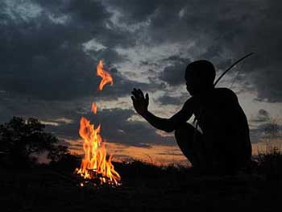

Llega Anima Film Fest, con películas que nutren el alma
Te contamos todo sobre el festival que se realizará del 3 al 6 de octubre en Cinemark Palermo
¿Tenés ganas de ver películas inspiradoras, que nos lleguen al alma y nos ayuden a tener una vida más feliz? Del 3 al 6 de octubre podés ser parte de la primera edición de Anima Film Fest y disfrutar de películas que transmiten valores y despiertan alegría. ¿Dónde? En Cinemark Palermo(Beruti 3399). Este festival busca estimular la reflexión individual y colectiva que transforme la mirada cotidiana, apostando a mejorar nuestra calidad de vida.
¿Qué películas podés ver? Te pasamos la programación:
Programación de Anima Film Fest:
-
Happy Happy (Estados Unidos, 2011)
Invita a hacer un viaje alrededor del mundo para conocer qué es lo que realmente hace feliz a las personas.
-
Life in a Day (Estados Unidos, Gran Bretaña, 2011)
Son imágenes de lo que hace cada persona en su cotidianeidad. Una fecha: el 24 de julio de 2010. Una respuesta inesperada: 80.000 participantes, 4500 horas de material filmado, 192 países de procedencia. El film refleja cómo es la vida del hombre actual e invita a preguntarse sobre el paso del tiempo.
-
Who Cares? (Brasil, Estados Unidos, Tanzania, Suiza, Perú, Alemania, Canadá, 2013)
Más que un film, es un movimiento que invita a personas a ser changemakers, creadores de cambio. Invita a conocer las experiencias de personas que se sumaron a este movimiento.
-
Free The Mind (Estados Unidos, Suecia, Países Bajos, Australia, Finlandia, Dinamarca, 2012)
Luego de su encuentro con el Dalai Lama, el neurocientífico Richard Davidson aplica el mismo método riguroso del estudio de la depresión y la ansiedad al de la compasión y la amabilidad.
-
Finding Joe (Estados Unidos, 2011)
El film nos invita a atravesar el último viaje del héroe: el del autodescubrimiento. Mientras uno vence dragones y encuentra tesoros escondidos puede descubrir que el santo grial está más cerca de lo que uno se imagina.
-
The Revolutionary Optimists (Estados Unidos, India, 2013)
Mientras chicos salvan vidas en los barrios pobres de Calcuta, Amla Gangly los alienta a convertirse en agentes del cambio para que transformen sus vecindarios con resultados concretos.
-
Las Siete Leyes Espirituales del Exito (Estados Unidos 2007)
Una perspectiva diferente en la búsqueda del éxito. La cantante Olivia Newton-John y el director y actor Bill Duke comparten sus experiencias personales en las que debieron enfrentar desafíos que les dieron la seguridad en el camino hacia disfrutar la vida en todo su potencial.
-
Awaken Soul To Soul (Estados Unidos, 2012)
La palabra de Don Miguel Ruiz, Barbara Marx Hubbard, John Major Jenkins, Sri Sri Ravi Shankar, Robert Thurman, entre otros. Ellos revelan el verdadero significado esotérico del año 2012 y porqué nuestras crisis personales y del planeta nos van a llevar a liberarnos de nuestro miedo y aislamiento en pos del amor y la unión.